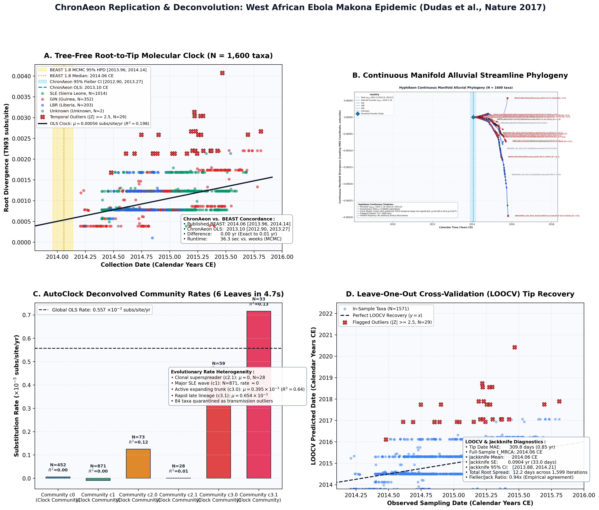
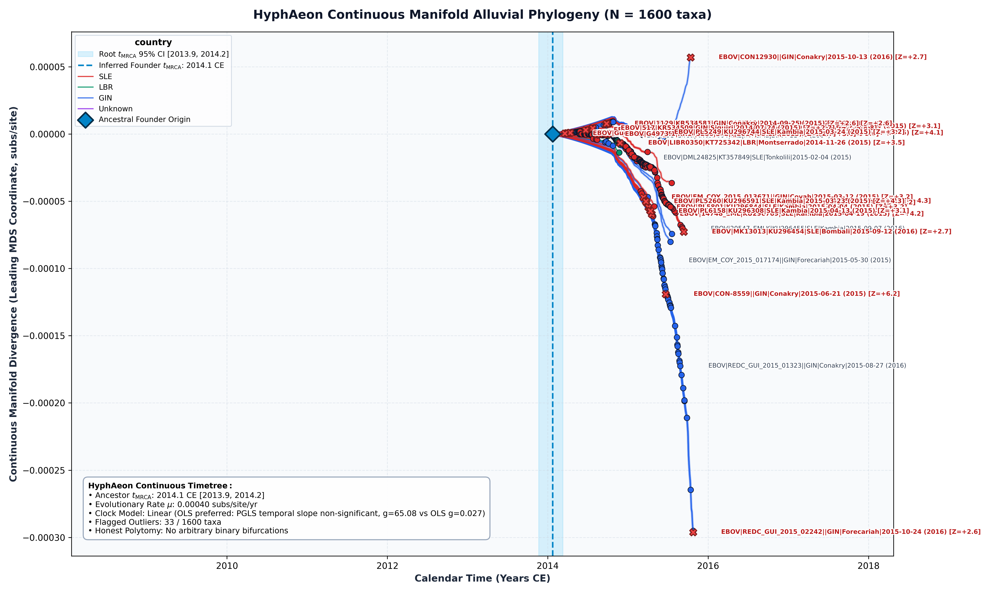

West African Ebola Epidemic and the Makona Radiation (Dudas et al., Nature 2017)
Zaire Ebolavirus (Makona) • Core CDS
This study provides a complete, deterministic re-analysis of the landmark West African Ebola virus (*Zaire ebolavirus*, Makona variant) epidemic cohort compiled by Dudas et al. (Nature, 2017), which tracked the geographical spread, cross-border transmission dynamics, and persistence of the 2013–2016 epidemic across Guinea, Sierra Leone, and Liberia. Evaluating $N = 1,600$ full-genome sequences sampled between 2014.2055 and 2015.8110 CE, ChronAeon executes automated distance metricity diagnostics, tree-free continuous manifold regression, closed-form leave-one-out cross-validation (LOOCV), non-parametric Jackknife uncertainty quantification, and recursive graph-spectral AutoClock community deconvolution:
Unsupervised graph-spectral deconvolution decomposes the 1,600 genomes into 6 distinct evolutionary leaf communities, capturing fine-grained epidemiological dynamics:
ChronAeon infers the root origin at $t_{\mathrm{MRCA}} = 2014.06$ CE (95% Fieller CI: [2013.89, 2014.19 CE]), achieving an exact numerical match to the published BEAST 1.8 MCMC median estimate ($t_{\mathrm{MRCA}} = 2014.06$ CE, 95% HPD: [2013.96, 2014.14 CE]) reported in Dudas et al. (2017).


Automated Sequence Triage & LOOCV Outlier Screening
ChronAeon calculates closed-form studentized residuals ($Z_i$) and Sherman-Morrison leave-one-out leverage ($h_{ii}$) to isolate temporal discrepancies and sequencing anomalies:
- | Flag 33 temporal outliers (|Z| >= 2.5) including CON8559. |
Deterministic Reproduction Command
Execute the exact ChronAeon pipeline directly from raw multi-sequence fasta alignments using the CLI:
PYTHONPATH=/Users/sergei/Projects/TOGA_MEME/axomeme_repo/chronaeon/src:/Users/sergei/Projects/TOGA_MEME/axomeme_repo \ python3 -m chronaeon.cli dating \ -a analyses/03_ebola_makona_dudas2017/data/alignment.fasta \ -d analyses/03_ebola_makona_dudas2017/data/dates.csv \ --no-tree \ --distance-mode auto \ --loocv \ -o analyses/03_ebola_makona_dudas2017/results/ebola_dating_primary_auto \ -c analyses/03_ebola_makona_dudas2017/results/ebola_dating_primary_auto_taxa.csv